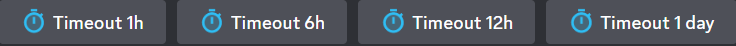
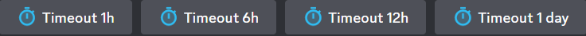

Welcome To The Meta Wikipedia Page
For you to find whatever you are looking for, make sure you're at the correct page. You can go back to the wiki menu by clicking the back button.
If you would like to return back to home page, click the Home button.
To give you the best experience here at Meta Wiki, make sure to contact with the Support team via Discord, if you find a mistake, bug or just get confused.
We are always happy to help you out!

 
